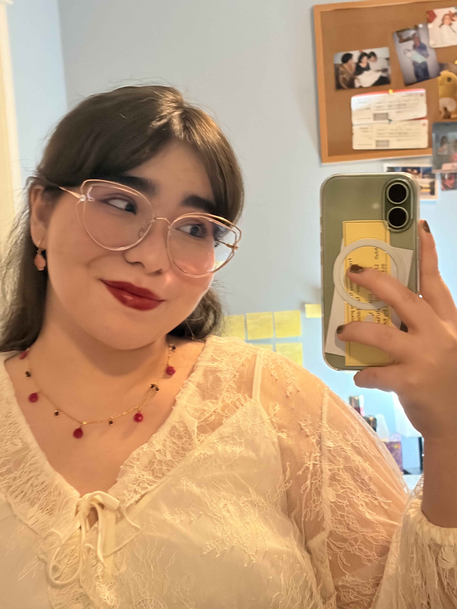
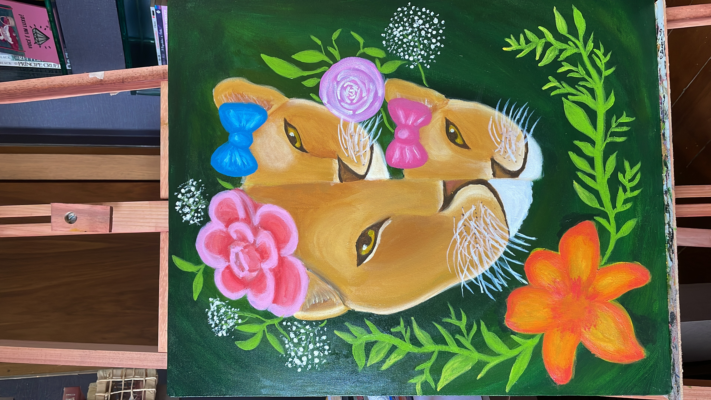
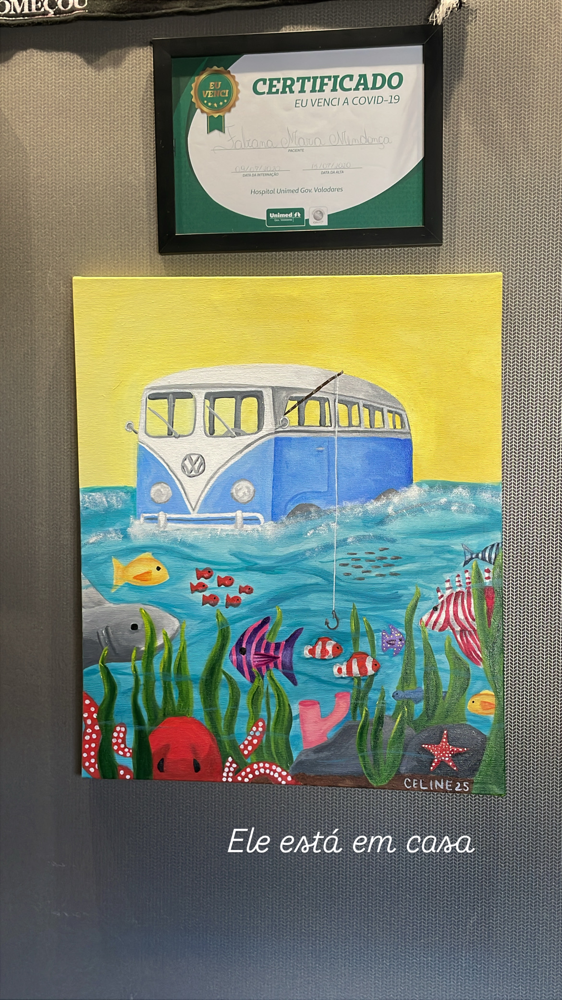
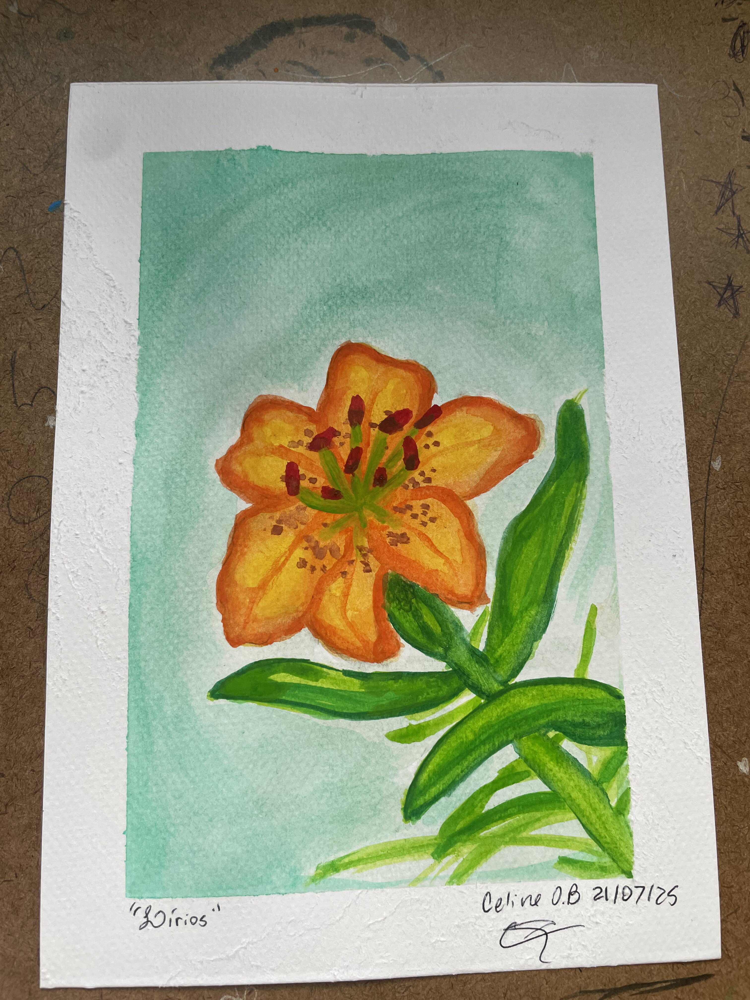

Psychology student from Brazil, building a life in Canada and posting about all of it — the wins, the hard days, and everything I'm learning along the way. Estudante de psicologia, brasileira construindo uma vida no Canadá — e postando sobre tudo isso, as conquistas, os dias difíceis e tudo que vou aprendendo pelo caminho.
“A life under construction, documented in real time.” “Uma vida em construção, documentada em tempo real.”
Come get to know me!Vem me conhecer! ⤵01 — nice to meet you!01 — prazer em conhecer!
the person behind the postsa pessoa por trás dos posts
Hi, I'm Celine — I'm 19, Brazilian, and I moved to Nanaimo, BC to study Psychology at Vancouver Island University. I'm building this life one deliberate step at a time, and I document the whole thing here and on Instagram/TikTok as I go. Back home, I was Communications Chair at Frances Kelsey Secondary during my grad year — turns out I've always liked telling people what's going on.
Oi, eu sou a Celine — tenho 19 anos, sou brasileira e me mudei pra Nanaimo, no Canadá, pra estudar Psicologia na Vancouver Island University. Tô construindo essa vida um passo de cada vez, com intenção, e documento tudo isso aqui e no Instagram/TikTok conforme vou vivendo. Antes de vir, fui Coordenadora de Comunicação na Frances Kelsey Secondary no meu último ano — parece que sempre gostei de contar pras pessoas o que tá rolando.
My thing with psychology isn't recent — I've been in therapy since I was 11, and watching how much understanding my own mind changed my life is basically why I'm doing this degree. I'm especially into behavioral analysis: how the environment around us quietly shapes who we turn into.
Minha relação com psicologia não é de agora — faço terapia desde os 11 anos, e ver o quanto entender minha própria cabeça mudou minha vida é basicamente o motivo de eu estar nessa graduação. Sou especialmente fã de análise do comportamento: como o ambiente ao nosso redor molda, sem avisar, quem a gente vira.
When I'm not buried in readings, I'm painting, journaling, or overthinking how creativity and the human mind talk to each other. Also — huge soft spot for dogs and little kids, no notes.
Quando não tô enterrada em leitura, tô pintando, escrevendo ou pensando demais sobre como criatividade e mente humana conversam entre si. Também tenho um fraco gigante por cachorros e crianças pequenas, sem exceções.
02 — where I've been02 — por onde passei
the real version, no highlight reela versão real, sem filtro de destaques
2026 – Present2026 – Atual · The dream begins!· O sonho começa!
First year of my Psych BA, and I'm already hooked. Between research methods, human development, and behavior analysis, every class makes me more sure this is exactly where I'm supposed to be.
Primeiro ano do bacharelado em Psicologia, e já tô viciada. Entre métodos de pesquisa, desenvolvimento humano e análise do comportamento, cada aula me deixa mais certa de que esse é exatamente o meu caminho.
2026 – Present2026 – Atual · Where creativity meets the mind· Onde a criatividade encontra a mente
@ Independent Research@ Pesquisa Independente
Digging into the tangled relationship between art and politics, through a psych lens — how artistic expression both reflects and shapes political consciousness. Basically getting to combine my two favorite obsessions and calling it research.
Investigando a relação emaranhada entre arte e política, com um olhar da psicologia — como a expressão artística reflete e também molda a consciência política. Basicamente juntando minhas duas obsessões favoritas e chamando isso de pesquisa.
2026 · Teaching little artists· Ensinando pequenos artistas
@ George Bonner Elementary, Mill Bay
Taught painting and drawing to kids in grades 3–6 every Friday, through a Frances Kelsey initiative. Watching them express themselves through art taught me more about child development than any textbook has.
Ensinei pintura e desenho pra crianças do 3º ao 6º ano toda sexta-feira, numa iniciativa da Frances Kelsey. Ver elas se expressando através da arte me ensinou mais sobre desenvolvimento infantil do que qualquer livro.
Grad YearÚltimo Ano · Connecting people!· Conectando pessoas!
@ Frances Kelsey Secondary School
Ran the socials, the shared calendar, the sign changes, the meetings — basically kept the whole school in the loop as Communications Chair for student council. Turns out that was training for exactly what I'm doing now.
Cuidei das redes, do calendário compartilhado, dos cartazes, das reuniões — basicamente mantive a escola inteira por dentro como Coordenadora de Comunicação do grêmio. Só que isso foi treino pro que eu faço agora.
High SchoolEnsino Médio · Competitive learning!· Aprendizado competitivo!
Silver Medal — CanguruMedalha de Prata — Canguru
Competed in a few academic olympiads — Canguru (Math, silver medal!), OBB (Biology), ONHB (History). Mostly what I took from it: I actually like a good challenge.
Competi em algumas olimpíadas acadêmicas — Canguru (Matemática, medalha de prata!), OBB (Biologia), ONHB (História). O que eu tirei disso, no fim: eu realmente gosto de um bom desafio.
03 — things I'm working on03 — no que estou trabalhando
real things I actually finishedcoisas que eu realmente terminei
Capstone ResearchPesquisa de Conclusão
Art doesn't just reflect public opinion — it shapes it, whether it announces itself as political or not. This Capstone traces that argument from the 1922 Week of Modern Art in Brazil through three case studies: Tropicália under Brazil's military dictatorship, American comics as WWII propaganda, and the quiet influence of 2000s pop culture. Drawing on Tolstoy's theory of art as emotional transmission and Collingwood's idea that art makes conscious what society hasn't yet articulated, I argue that even "apolitical" art carries political weight.
A arte não apenas reflete a opinião pública — ela a molda, seja se anunciando como política ou não. Este trabalho de conclusão traça esse argumento desde a Semana de Arte Moderna de 1922 no Brasil através de três estudos de caso: Tropicália sob a ditadura militar brasileira, quadrinhos americanos como propaganda na Segunda Guerra Mundial, e a influência silenciosa da cultura pop dos anos 2000. Baseando-se na teoria de Tolstói sobre arte como transmissão emocional e na ideia de Collingwood de que a arte torna consciente o que a sociedade ainda não articulou, argumento que até a arte "apolítica" carrega peso político.
Research InterestInteresse de Pesquisa
Exploring how books and reading shape early childhood development. From building empathy and emotional vocabulary to supporting cognitive growth, literature plays a critical role in how young minds learn to understand themselves and the world. I'm interested in how access to books in early years impacts long-term psychological well-being and how storytelling can be used as a therapeutic tool.
Explorando como livros e leitura moldam o desenvolvimento infantil. Desde a construção de empatia e vocabulário emocional até o apoio ao crescimento cognitivo, a literatura desempenha um papel fundamental em como mentes jovens aprendem a entender a si mesmas e o mundo. Estou interessada em como o acesso a livros nos primeiros anos impacta o bem-estar psicológico a longo prazo e como a contação de histórias pode ser usada como ferramenta terapêutica.
04 — a peek into my world04 — uma espia da minha mundo
creating is how I make sense of everythingcriar é como faço sentido de tudo



Paintings by me — from lionesses to underwater worlds to watercolor flowersPinturas minhas — de leonas a mundos submersos até flores em aquarela
05 — Topics that inspire me05 — Tópicos que me inspiram
the questions I can't stop thinking aboutas perguntas que eu não paro de pensar
What I'm into right nowNo que eu tô pensando agora
How do our early surroundings shape who we become? I want to explore the impact of environment on developing minds — from access to books and art to the role of reinforcement contingencies — and contribute to making childhood experiences better for everyone.
Como nossos ambientes iniciais moldam quem nos tornamos? Eu quero explorar o impacto do ambiente em mentes em desenvolvimento — desde o acesso a livros e arte até o papel das contingências de reforçamento — e contribuir para melhorar experiências infantis para todos.
What I'm into right nowNo que eu tô pensando agora
I'm interested in how literature shapes early childhood development — building empathy, emotional vocabulary, and cognitive growth. Specifically, how storytelling can be used as a tool in therapeutic settings with children.
Estou interessada em como a literatura molda o desenvolvimento infantil — construindo empatia, vocabulário emocional e crescimento cognitivo. Especificamente, como a contação de histórias pode ser usada como ferramenta em ambientes terapêuticos com crianças.
Just for meSó pra mim
An ongoing personal exploration of how visual art connects to our psychological experience. Journaling and researching the ways creative works reflect and shape our inner worlds.
Uma exploração pessoal contínua de como a arte visual se conecta com nossa experiência psicológica. Mantendo diários e pesquisando as maneiras como obras criativas refletem e moldam nossos mundos interiores.
06 — dreaming big06 — sonhando grande
here's what I'm building towardé essa a direção que eu tô construindo
I don't need every detail mapped out to know where I'm headed. These are the things I'm actively working toward — and yes, some of the path will surprise me, but the direction is clear:Não preciso ter cada detalhe mapeado pra saber pra onde eu vou. Essas são as coisas que eu tô construindo ativamente — e sim, parte do caminho ainda vai me surpreender, mas a direção é clara:
I want to do research that actually means something — on how the world around us shapes our brains and our lives. I could think about this stuff forever, honestly.
Quero fazer pesquisa que realmente signifique algo — sobre como o mundo ao nosso redor molda nossos cérebros e nossas vidas. Eu penso sobre isso o dia inteiro, sinceramente.
I want to dive deeper into behavioral analysis and actually contribute to the field, not just study it. There's so much potential in understanding how we can positively influence behavior.
Quero mergulhar mais fundo em análise do comportamento e contribuir de verdade pro campo, não só estudar. Há tanto potencial em entender como podemos influenciar positivamente o comportamento.
A master's or PhD is somewhere down the road — I want to combine research with practice and become the kind of psychologist who actually moves the field forward.
Um mestrado ou doutorado tá em algum ponto do caminho — quero combinar pesquisa com prática e me tornar o tipo de psicóloga que realmente move o campo pra frente.
Kids have always had a special place in my heart. I'd love to specialize in child psychology and help young people build confidence in who they're becoming, early.
Crianças sempre tiveram um lugar especial no meu coração. Adoraria me especializar em psicologia infantil e ajudar jovens a construir confiança em quem estão se tornando, desde cedo.
Being bilingual in Portuguese and English is just the start. More languages means more people I can actually talk to — and more research I can read without a translator.
Ser bilíngue em português e inglês é só o começo. Mais idiomas significa mais gente pra eu conversar de verdade — e mais pesquisa que consigo ler sem precisar de tradução.
Psychology shouldn't live only in academic journals. That's honestly a big part of why I post — trying to make this stuff make sense outside of a classroom.
Psicologia não devia viver só em artigos acadêmicos. Essa é, sincerinha, uma das razões de eu postar — tentando fazer esse conteúdo fazer sentido fora da sala de aula.
07 — let's be friends!07 — vamos ser amigos!
always happy to chatsempre feliz em conversar
Here's the thing — I don't wait until I have every answer to show up. This space (and @celinebarros.acad on Instagram, TikTok and YouTube) is where I post about psychology in plain language, what studying abroad actually looks like, and the very unglamorous parts of building a life you're proud of. If you're 15 to 24, dreaming about moving abroad, or just curious what a regular Tuesday looks like for me — you're exactly who this is for.
Olha só — eu não espero ter todas as respostas pra aparecer. Esse espaço (e o @celinebarros.acad no Instagram, TikTok e YouTube) é onde eu posto sobre psicologia em linguagem acessível, como é realmente estudar fora, e as partes nada glamorosas de construir uma vida da qual eu me orgulho. Se você tem entre 15 e 24 anos, sonha em morar fora, ou só tem curiosidade de saber como é uma terça-feira comum pra mim — é exatamente pra você que eu escrevo isso.
Also — if you want to talk research, collaborate, or just say hi, my inbox is always open. I speak both English and Portuguese, so come as you are.
Também — se quiser trocar ideia sobre pesquisa, colaborar ou só mandar um oi, minha caixa de entrada tá sempre aberta. Falo português e inglês, então pode vir do jeito que você é.